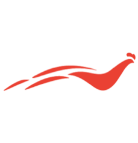
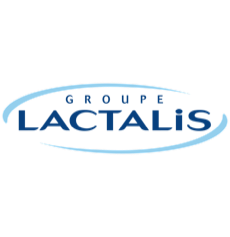

MES EXPÉRIENCES
ALTERNANCE
Septembre 2017
- août 2018

- GALLIANCE - Ancenis, France
- Suivi et mise en place de packagings,
- Mise en place d’outils commerciaux,
- Coordination et préparation de salons professionnels,
- Suivi et analyse de gammes,
- Développement de nouveaux produits
Pôle Volaille de Terrena, grand groupe coopératif français Alternance en tant qu’assistante chef de produit
STAGE
Mai 2017
- août 2017

- LACTALIS NESTLÉ ULTRA FRAIS - Barcelone, Espagne
Groupe spécialisé dans la fabrication de lait liquide et de produits laitiers
Stage dans le service marketing
- Veille concurrentielle,
- Participation à l’analyse des ventes (logiciel IRI),
- Participation à la vérification des normes packaging,
- Etude des packagings concurrents,
- Mise à jour des documents marketing,
- Organisation de dégustations de produits
STAGE
Juillet 2016
- août 2016
- TECHNOSYSTEMS - Miami, Etats-Unis
- Traitement d’une demande client de A à Z,
- Inventaire,
- Utilisation d’un logiciel de traitement de commande " Quickbook ",
- Traduction de notices d’utilisation de matériels techniques,
- Relance clients
Société de conception, intégration de systèmes audio-visuels, vidéos lumières scéniques sur des yachts et bateaux de croisière
Née le 19 septembre 1996
41 place Jeanne d’Arc – 44150 Ancenis
06 29 85 39 83
salome.jadeau@gmail.com
Permis B